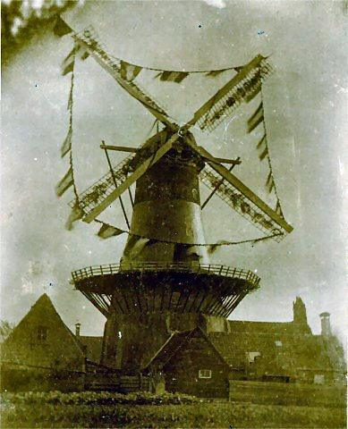

Wassenaar: bestaande molens
In oude ansichten

 Windlust |
 Windlust |
 Windlust |
 Windlust |
 Windlust |
 Windlust |
|
 Windlust c.a.1898 |
 Windlust |
 Windlust 8 |
 Windlust 9 c.a 1880 |
 Windlust 10 c.a. 1910 |
 Windlust 11: 1930 |
 Windlust 12: 1945 |
 Windlust 14 c.a.1935 |
 Windlust 15: 1930 |
 Windlust 13: 1935 |
 Windlust c.a. 1910 |
 |
 |
 |
 |
 Windlust 17: 1900 |
 Windlust 16: 1910 |
.jpg) Windlust. |
 |
 Deze pagina is gemaakt op 25-12-2006: Tijd: 15:29 uur.
Deze pagina is gemaakt op 25-12-2006: Tijd: 15:29 uur.

Laatste wijziging: 3-1-2007: Tijd 22:54 uur.
Met dank aan: de
Hollandsche molen/Rob Pols/Hans Klok/Gerard Barendse/
Erwin Esselink/Teun van der Sloot/Huub Lelieveld/ voor het gebruik van de foto's